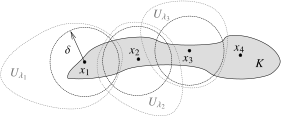

A convergent sequence in a metric space is Cauchy.
Proof.
Suppose {xn}n=1∞ converges to p. Given ϵ>0, there is an M such that for all n≥M, we have d(p,xn)<ϵ/2. Hence, for all n,k≥M, we have d(xn,xk)≤d(xn,p)+d(p,xk)<ϵ/2+ϵ/2=ϵ.
L7.4.4: Euclidean completeness by coordinatewise real completeness
Proposition7.4.4.
The space Rn with the standard metric is a complete metric space.
Proof.
Let {xm}m=1∞ be a Cauchy sequence in Rn, where xm=(xm,1,xm,2,…,xm,n)∈Rn. As the sequence is Cauchy, given ϵ>0, there exists an M such that for all i,j≥M,
Hence, the sequence {xm,k}m=1∞ is Cauchy. As R is complete, the sequence converges; there exists a yk∈R such that yk=limm→∞xm,k. Write y=(y1,y2,…,yn)∈Rn. By Proposition 7.3.9, {xm}m=1∞ converges to y∈Rn, and hence Rn is complete.
L7.4.9: Compact sets are closed and bounded, with the empty-set case explicit locally
Proposition7.4.9.
Let (X,d) be a metric space. If K⊂X is compact, then K is closed and bounded.
Proof.
First, we prove that a compact set is bounded. Fix p∈X. We have the open cover
K⊂n=1⋃∞B(p,n)=X.
If K is compact, then there exists some set of indices n1<n2<…<nm such that
K⊂j=1⋃mB(p,nj)=B(p,nm).
As K is contained in a ball, K is bounded. See the left-hand side of Figure 7.11.
Next, we show that a set that is not closed is not compact. Suppose K=K, that is, there is a point x∈K∖K. If y=x, then y∈/C(x,1/n) for n∈N such that 1/n<d(x,y). Furthermore, x∈/K, so
K⊂n=1⋃∞C(x,1/n)c.
A closed ball is closed, so its complement C(x,1/n)c is open, and we have an open cover. If we take any finite collection of indices n1<n2<…<nm, then
j=1⋃mC(x,1/nj)c=C(x,1/nm)c
As x is in the closure of K, then C(x,1/nm)∩K=∅. So there is no finite subcover and K is not compact. See the right-hand side of Figure 7.11.
L7.4.10: Lebesgue covering lemma proved directly from sequential compactness
Lemma7.4.10.Lebesgue covering lemma.
Let (X,d) be a metric space and K⊂X. Suppose every sequence in K has a subsequence convergent in K. Given an open cover {Uλ}λ∈I of K, there exists a δ>0 such that for every x∈K, there exists a λ∈I with B(x,δ)⊂Uλ.
Proof.
We prove the lemma by contrapositive. If the conclusion is not true, then there is an open cover {Uλ}λ∈I of K with the following property. For every n∈N, there exists an xn∈K such that B(xn,1/n) is not a subset of any Uλ. Take any x∈K. There is a λ∈I such that x∈Uλ. As Uλ is open, there is an ϵ>0 such that B(x,ϵ)⊂Uλ. Take M such that 1/M<ϵ/2. If y∈B(x,ϵ/2) and n≥M, then
B(y,1/n)⊂B(y,1/M)⊂B(y,ϵ/2)⊂B(x,ϵ)⊂Uλ,
where B(y,ϵ/2)⊂B(x,ϵ) follows by triangle inequality. See Figure 7.12. Thus y=xn. In other words, for all n≥M,xn∈/B(x,ϵ/2). The sequence cannot have a subsequence converging to x. As x∈K was arbitrary, we are done.
L7.4.11: Sequential compactness and the finite-subcover definition are equivalent
Theorem7.4.11.
Let (X,d) be a metric space. Then K⊂X is compact if and only if every sequence in K has a subsequence converging to a point in K.
Proof.
Claim: Let K⊂X be a subset of X and {xn}n=1∞ a sequence in K. Suppose that for each x∈K, there is a ball B(x,αx) for some αx>0 such that xn∈B(x,αx) for only finitely many n∈N. Then K is not compact.
Proof of the claim: Notice
K⊂x∈K⋃B(x,αx).
Any finite collection of these balls contains at most finitely many elements of {xn}n=1∞, and so there must be an xn∈K not in their union. Hence, K is not compact and the claim is proved.
So suppose that K is compact and {xn}n=1∞ is a sequence in K. Then there exists an x∈K such that for all δ>0,B(x,δ) contains xn for infinitely many n∈N. We define the subsequence inductively. The ball B(x,1) contains some xk, so let n1:=k. Suppose nj−1 is defined. There must exist a k>nj−1 such that xk∈B(x,1/j). Define nj:=k. We now possess a subsequence {xnj}j=1∞. Since d(x,xnj)<1/j,Proposition 7.3.5 says limj→∞xnj=x.
For the other direction, suppose every sequence in K has a subsequence converging in K. Take an open cover {Uλ}λ∈I of K. Using the Lebesgue covering lemma above, find a δ>0 such that for every x∈K, there is a λ∈I with B(x,δ)⊂Uλ.
Pick x1∈K and find λ1∈I such that B(x1,δ)⊂Uλ1. If K⊂Uλ1, we stop as we have found a finite subcover. Otherwise, there must be a point x2∈K∖Uλ1. Note that d(x2,x1)≥δ. There must exist some λ2∈I such that B(x2,δ)⊂Uλ2. We work inductively. Suppose λn−1 is defined. Either Uλ1∪Uλ2∪⋯∪Uλn−1 is a finite cover of K, in which case we stop, or there must be a point xn∈K∖(Uλ1∪Uλ2∪⋯∪Uλn−1). Note that d(xn,xj)≥δ for all j=1,2,…,n−1. Next, there must be some λn∈I such that B(xn,δ)⊂Uλn. See Figure 7.13.

Figure7.13.Covering K by Uλ. The points x1,x2,x3,x4, the three sets Uλ1,Uλ2,Uλ3, and the first three balls of radius δ are drawn.
Either at some point we obtain a finite subcover of K, or we obtain an infinite sequence {xn}n=1∞ as above. For contradiction, suppose that there is no finite subcover and we have the sequence {xn}n=1∞. For all n and k,n=k, we have d(xn,xk)≥δ. So no subsequence of {xn}n=1∞ is Cauchy. Hence, no subsequence of {xn}n=1∞ is convergent, which is a contradiction.
Figure7.11.Proving compact set is bounded (left) and closed (right).Figure7.12.Proof of Lebesgue covering lemma. Note that B(y,ϵ/2)⊂B(x,ϵ) by triangle inequality.
![Two diagrams. A set K is given as a shaded region with solid boundary. In the left diagram, a point p is highlighted together with 3 nested open balls (circles in this case) of radius 1, 2, and 3 all centered at p with dotted boundary. The set K lies in the largest one. In the right diagram, the background of the diagram is shaded. A point x that is on the boundary of K is shown, and 4 closed balls are drawn as circles with the inside shaded in lighter and lighter gray, indicating that we are looking at the complements. The outer ball is of radius 1, then there is a ball of radius one half, then a ball of radius one third, then a ball of radius one fourth. We note that as x sits on the boundary, the complements of the balls cover more and more of K. On the other hand we also note that K has nonempty intersection with all the closed balls.](figures/compact_bnd_closed-mbxpdft.svg)
![A diagram of a shaded open set U sub lambda. A point x in U sub lambda is marked and a ball of radius epsilon centered at x is drawn and this ball sits within U sub lambda. A ball of radius epsilon over 2 centered at x is also drawn which sits within the larger ball. A point y in the smaller ball is marked and a ball of radius epsilon over 2 centered at y is shown. We note that this ball centered at y sits entirely within the ball of radius epsilon centered at x, the largest ball, and hence also within U sub lambda. One last small ball of radius 1 over n centered at y is shown that sits within the epsilon over 2 ball centered at y.](figures/lebesguedelta-mbxpdft.svg)